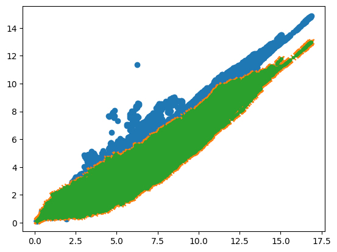
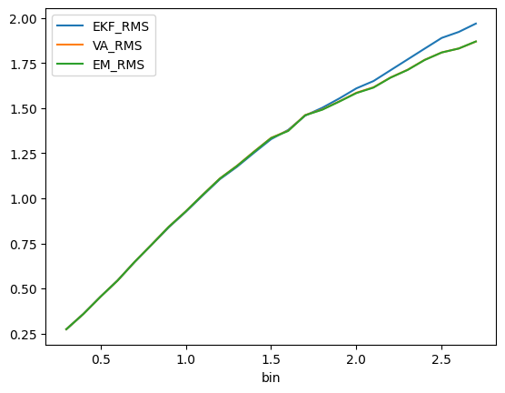
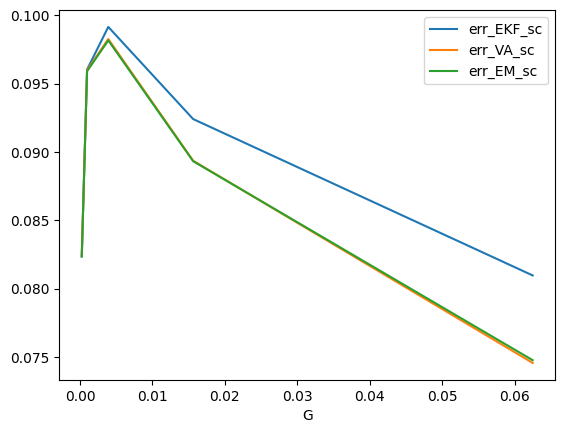
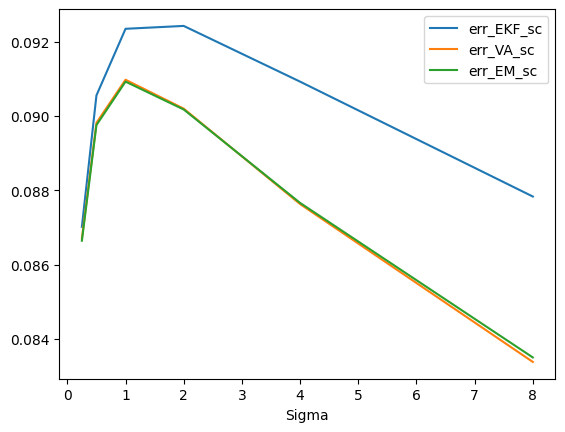
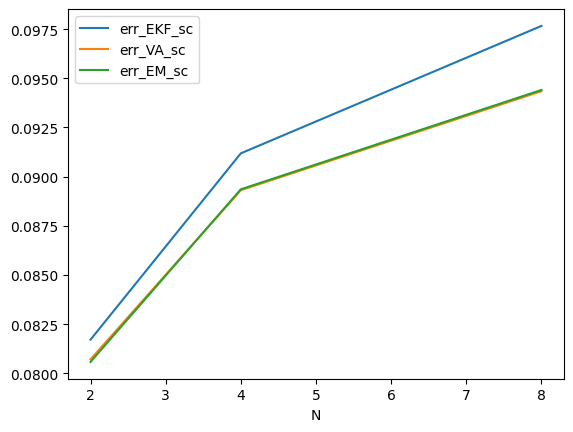

---
skip_showdoc: true
---key によるバッチ化
Test
N=2
T=1000
G = 1/2**7 * jnp.identity(N, dtype=jnp.float32)
Sigma = 1.5 * jnp.identity(N, dtype=jnp.float32)
w0 = 0*jnp.ones((N,), dtype=jnp.float32)/jnp.sqrt(N)
P0 = G
propy1 = 0.5
batched_exper = jax.vmap(
lambda key: Comp.RMS(key, N, T, G, w0, Sigma, P0, propy1)
)
master_key = jrd.PRNGKey(0)
keys = jrd.split(master_key, 1000)
W_norms, RMS_EKF, RMS_VA, RMS_EM = batched_exper(keys)plt.scatter(W_norms.reshape(-1), RMS_EKF.reshape(-1))
plt.scatter(W_norms.reshape(-1), RMS_VA.reshape(-1), marker="x")
plt.scatter(W_norms.reshape(-1), RMS_EM.reshape(-1), marker=".")
# bin の定義
bins = jnp.arange(0.1, 12, 0.1)
bin_edges = jnp.arange(0.0, 12.1, 0.1) # 例: [0.0, 0.1, 0.2, ..., 12.0]
# 各要素が属するビンを計算 (1~len(bins) のインデックス)
bin_idx = jnp.digitize(W_norms.ravel(), bin_edges) - 1 # shape (T*N,)
# フラット化
ekf_flat = RMS_EKF.ravel()
va_flat = RMS_VA.ravel()
em_flat = RMS_EM.ravel()
# 各 bin ごとの総和とカウントを計算
sum_ekf = jnp.bincount(bin_idx, weights=ekf_flat, length=len(bins))
sum_va = jnp.bincount(bin_idx, weights=va_flat, length=len(bins))
sum_em = jnp.bincount(bin_idx, weights=em_flat, length=len(bins))
counts = jnp.bincount(bin_idx, length=len(bins))
# 平均を計算（ゼロ除算防止）
mean_ekf = jnp.where(counts > 0, sum_ekf / counts, jnp.nan)
mean_va = jnp.where(counts > 0, sum_va / counts, jnp.nan)
mean_em = jnp.where(counts > 0, sum_em / counts, jnp.nan)
# 最終結果をまとめる
df_source = jnp.stack([bins, mean_ekf, mean_va, mean_em], axis=1)
# Pandas DataFrame に変換（必要なら）
df = pd.DataFrame(jnp.array(df_source), columns=["bin", "EKF_RMS", "VA_RMS", "EM_RMS"]).set_index("bin")df[0.8:10].head(20)| EKF_RMS | VA_RMS | EM_RMS | |
|---|---|---|---|
| bin | |||
| 0.8 | 0.742320 | 0.743473 | 0.743350 |
| 0.9 | 0.839010 | 0.841791 | 0.841518 |
| 1.0 | 0.924905 | 0.927862 | 0.927469 |
| 1.1 | 1.016297 | 1.020453 | 1.019893 |
| 1.2 | 1.105977 | 1.110465 | 1.109501 |
| 1.3 | 1.174655 | 1.180493 | 1.179403 |
| 1.4 | 1.252368 | 1.259346 | 1.257725 |
| 1.5 | 1.327946 | 1.335311 | 1.333957 |
| 1.6 | 1.379003 | 1.375262 | 1.373536 |
| 1.7 | 1.458880 | 1.461715 | 1.460669 |
| 1.8 | 1.502239 | 1.492858 | 1.491333 |
| 1.9 | 1.553879 | 1.537835 | 1.536580 |
| 2.0 | 1.609895 | 1.585574 | 1.583595 |
| 2.1 | 1.650254 | 1.615584 | 1.614009 |
| 2.2 | 1.710323 | 1.670204 | 1.669090 |
| 2.3 | 1.770196 | 1.712925 | 1.711877 |
| 2.4 | 1.830160 | 1.768064 | 1.767073 |
| 2.5 | 1.889573 | 1.808915 | 1.808709 |
| 2.6 | 1.922787 | 1.830989 | 1.830768 |
| 2.7 | 1.968957 | 1.869247 | 1.869909 |
df[:2.7].plot()
N=10
T=1000
G = 1/2**9 * jnp.identity(N, dtype=jnp.float32)
Sigma = 0.5 * jnp.identity(N, dtype=jnp.float32)
w0 = 0*jnp.ones((N,), dtype=jnp.float32)/jnp.sqrt(N)
P0 = G
propy1 = 0.5
batched_exper = jax.vmap(
lambda key: Comp.losi_error(key, N, T, G, w0, Sigma, P0, propy1)
)
master_key = jrd.PRNGKey(0)
keys = jrd.split(master_key, 1000)
RMS_EKF, RMS_VA, RMS_EM = batched_exper(keys)RMS_EKF.sum(), RMS_VA.sum(), RMS_EM.sum()(Array(1.0641768e+07, dtype=float32),
Array(8.087362e+06, dtype=float32),
Array(8.100394e+06, dtype=float32))Ns = [2, 4, 8]
Gs = jnp.array([1/2**4, 1/2**6, 1/2**8, 1/2**10, 1/2**12])
Sigmas = jnp.array([1/2**2, 1/2, 1, 2, 4, 8])
propy1s = jnp.array([0.5, 0.1])
import pandas as pd
# 最初に空の DataFrame を用意
df = pd.DataFrame(columns=["N", "G", "Sigma", "propy1", "err_EKF_sc", "err_VA_sc", "err_EM_sc"])
for N in Ns:
print("N", N)
for G_ in Gs:
print("G", G_)
for Sigma_ in Sigmas:
for propy1 in propy1s:
T = 1000
G = G_ * jnp.identity(N, dtype=jnp.float32)
Sigma = Sigma_ * jnp.identity(N, dtype=jnp.float32)
w0 = 0*jnp.ones((N,), dtype=jnp.float32)/jnp.sqrt(N)
P0 = G
batched_exper = jax.vmap(
lambda key: Comp.losi_error(key, N, T, G, w0, Sigma, P0, propy1),
in_axes=(0,)
)
master_key = jrd.PRNGKey(0)
keys = jrd.split(master_key, 1000)
err_EKF, err_VA, err_EM = batched_exper(keys)
err_EKF_sc = jnp.sqrt(err_EKF.mean())
err_VA_sc = jnp.sqrt(err_VA.mean())
err_EM_sc = jnp.sqrt(err_EM.mean())
# pandas df に追加
df.loc[len(df)] = [
int(N),
float(G_),
float(Sigma_),
float(propy1),
float(err_EKF_sc),
float(err_VA_sc),
float(err_EM_sc)
]
print(df.head())N 2
G 0.0625
G 0.015625
G 0.00390625
G 0.0009765625
G 0.00024414062
N 4
G 0.0625
G 0.015625
G 0.00390625
G 0.0009765625
G 0.00024414062
N 8
G 0.0625
G 0.015625
G 0.00390625
G 0.0009765625
G 0.00024414062
N G Sigma propy1 err_EKF_sc err_VA_sc err_EM_sc
0 2.0 0.0625 0.25 0.5 0.092954 0.093325 0.093123
1 2.0 0.0625 0.25 0.1 0.092736 0.093197 0.092990
2 2.0 0.0625 0.50 0.5 0.093420 0.093336 0.093043
3 2.0 0.0625 0.50 0.1 0.093356 0.093240 0.092941
4 2.0 0.0625 1.00 0.5 0.093443 0.091697 0.091294| N | G | Sigma | propy1 | err_EKF_sc | err_VA_sc | err_EM_sc | |
|---|---|---|---|---|---|---|---|
| 2 | 2.0 | 0.062500 | 0.50 | 0.5 | 0.093420 | 0.093336 | 0.093043 |
| 4 | 2.0 | 0.062500 | 1.00 | 0.5 | 0.093443 | 0.091697 | 0.091294 |
| 6 | 2.0 | 0.062500 | 2.00 | 0.5 | 0.093836 | 0.089228 | 0.088805 |
| 8 | 2.0 | 0.062500 | 4.00 | 0.5 | 0.094327 | 0.086147 | 0.085870 |
| 10 | 2.0 | 0.062500 | 8.00 | 0.5 | 0.096139 | 0.082455 | 0.082723 |
| 18 | 2.0 | 0.015625 | 2.00 | 0.5 | 0.093420 | 0.093336 | 0.093043 |
| 20 | 2.0 | 0.015625 | 4.00 | 0.5 | 0.093443 | 0.091697 | 0.091294 |
| 22 | 2.0 | 0.015625 | 8.00 | 0.5 | 0.093836 | 0.089228 | 0.088805 |
| 34 | 2.0 | 0.003906 | 8.00 | 0.5 | 0.093420 | 0.093336 | 0.093043 |
| 48 | 2.0 | 0.000244 | 0.25 | 0.5 | 0.039164 | 0.039163 | 0.039163 |
| 60 | 4.0 | 0.062500 | 0.25 | 0.5 | 0.100617 | 0.099913 | 0.099700 |
| 62 | 4.0 | 0.062500 | 0.50 | 0.5 | 0.093656 | 0.091329 | 0.091214 |
| 64 | 4.0 | 0.062500 | 1.00 | 0.5 | 0.085952 | 0.080761 | 0.080898 |
| 66 | 4.0 | 0.062500 | 2.00 | 0.5 | 0.078222 | 0.070136 | 0.070658 |
| 68 | 4.0 | 0.062500 | 4.00 | 0.5 | 0.072354 | 0.060668 | 0.061745 |
| 70 | 4.0 | 0.062500 | 8.00 | 0.5 | 0.064038 | 0.051949 | 0.053414 |
| 76 | 4.0 | 0.015625 | 1.00 | 0.5 | 0.100617 | 0.099913 | 0.099700 |
| 78 | 4.0 | 0.015625 | 2.00 | 0.5 | 0.093656 | 0.091329 | 0.091214 |
| 80 | 4.0 | 0.015625 | 4.00 | 0.5 | 0.085952 | 0.080761 | 0.080898 |
| 82 | 4.0 | 0.015625 | 8.00 | 0.5 | 0.078222 | 0.070136 | 0.070658 |
| 92 | 4.0 | 0.003906 | 4.00 | 0.5 | 0.100617 | 0.099913 | 0.099700 |
| 94 | 4.0 | 0.003906 | 8.00 | 0.5 | 0.093656 | 0.091329 | 0.091214 |
| 120 | 8.0 | 0.062500 | 0.25 | 0.5 | 0.096732 | 0.091938 | 0.092006 |
| 122 | 8.0 | 0.062500 | 0.50 | 0.5 | 0.083484 | 0.076024 | 0.076319 |
| 124 | 8.0 | 0.062500 | 1.00 | 0.5 | 0.071028 | 0.062117 | 0.062546 |
| 126 | 8.0 | 0.062500 | 2.00 | 0.5 | 0.059638 | 0.050017 | 0.050485 |
| 128 | 8.0 | 0.062500 | 4.00 | 0.5 | 0.048867 | 0.039920 | 0.040344 |
| 130 | 8.0 | 0.062500 | 8.00 | 0.5 | 0.038852 | 0.031403 | 0.031772 |
| 132 | 8.0 | 0.015625 | 0.25 | 0.5 | 0.120174 | 0.119479 | 0.119283 |
| 134 | 8.0 | 0.015625 | 0.50 | 0.5 | 0.109672 | 0.107326 | 0.107210 |
| 136 | 8.0 | 0.015625 | 1.00 | 0.5 | 0.096732 | 0.091938 | 0.092006 |
| 138 | 8.0 | 0.015625 | 2.00 | 0.5 | 0.083484 | 0.076024 | 0.076319 |
| 140 | 8.0 | 0.015625 | 4.00 | 0.5 | 0.071028 | 0.062117 | 0.062546 |
| 142 | 8.0 | 0.015625 | 8.00 | 0.5 | 0.059638 | 0.050017 | 0.050485 |
| 146 | 8.0 | 0.003906 | 0.50 | 0.5 | 0.125066 | 0.124960 | 0.124792 |
| 148 | 8.0 | 0.003906 | 1.00 | 0.5 | 0.120174 | 0.119479 | 0.119283 |
| 150 | 8.0 | 0.003906 | 2.00 | 0.5 | 0.109672 | 0.107326 | 0.107210 |
| 152 | 8.0 | 0.003906 | 4.00 | 0.5 | 0.096732 | 0.091938 | 0.092006 |
| 154 | 8.0 | 0.003906 | 8.00 | 0.5 | 0.083484 | 0.076024 | 0.076319 |
| 156 | 8.0 | 0.000977 | 0.25 | 0.5 | 0.104002 | 0.103998 | 0.103986 |
| 162 | 8.0 | 0.000977 | 2.00 | 0.5 | 0.125066 | 0.124960 | 0.124792 |
| 164 | 8.0 | 0.000977 | 4.00 | 0.5 | 0.120174 | 0.119479 | 0.119283 |
| 166 | 8.0 | 0.000977 | 8.00 | 0.5 | 0.109672 | 0.107326 | 0.107210 |
| 168 | 8.0 | 0.000244 | 0.25 | 0.5 | 0.076621 | 0.076618 | 0.076616 |
| 170 | 8.0 | 0.000244 | 0.50 | 0.5 | 0.090635 | 0.090629 | 0.090625 |
| 172 | 8.0 | 0.000244 | 1.00 | 0.5 | 0.104002 | 0.103998 | 0.103986 |
| 178 | 8.0 | 0.000244 | 8.00 | 0.5 | 0.125066 | 0.124960 | 0.124792 |
df.groupby("propy1").mean()| N | G | Sigma | err_EKF_sc | err_VA_sc | err_EM_sc | |
|---|---|---|---|---|---|---|
| propy1 | ||||||
| 0.1 | 4.666667 | 0.01665 | 2.625 | 0.090087 | 0.087966 | 0.087953 |
| 0.5 | 4.666667 | 0.01665 | 2.625 | 0.090186 | 0.088121 | 0.088114 |
df1 = df[df["propy1"] == 0.5][["N", "G", "Sigma", "err_EKF_sc", "err_VA_sc", "err_EM_sc"]]df1.shape(90, 7)損失関数と同じ評価関数
\[E=\|\hat{\mathbf w}_{t} - \mathbf w_t\|^2\]
新たに導入した評価関数: \[E=\sqrt{\frac{1}{T}\sum_t^T\left(\left[\sigma(\mathbf w_t^T\mathbf x_t) - \sigma(\hat{\mathbf w}_{t-1}^T\mathbf x_t)\right]^2\right)}\]
次元数 \(N\) に関しての比較
90 個のデータのうち、変分近似が拡張カルマンフィルタよりも \(E\) が大きかったデータは - \(N=2\) : 20/30 - \(N=4\) : 18/30 - \(N=8\) : 5/30
df1[(df1["err_EKF_sc"] < df1["err_VA_sc"])].groupby("N").count()| G | Sigma | err_EKF_sc | err_VA_sc | err_EM_sc | |
|---|---|---|---|---|---|
| N | |||||
| 2.0 | 20 | 20 | 20 | 20 | 20 |
| 4.0 | 18 | 18 | 18 | 18 | 18 |
| 8.0 | 5 | 5 | 5 | 5 | 5 |
遷移行列 \(\boldsymbol\Gamma=pI\) に関しての比較 90 個のデータのうち、変分近似が拡張カルマンフィルタよりも \(E\) が大きかったデータは [1/24, 1/26, 1/28, 1/210, 1/2**12] - \(p = 1/2^{12}\) : 13/18 - \(p = 1/2^{10}\) : 14/18 - \(p = 1/2^8\) : 10/18 - \(p = 1/2^6\) : 5/18 - \(p = 1/2^4\) : 1/18
df1[(df1["err_EKF_sc"] < df1["err_VA_sc"])].groupby("G").count()| N | Sigma | err_EKF_sc | err_VA_sc | err_EM_sc | |
|---|---|---|---|---|---|
| G | |||||
| 0.000244 | 13 | 13 | 13 | 13 | 13 |
| 0.000977 | 14 | 14 | 14 | 14 | 14 |
| 0.003906 | 10 | 10 | 10 | 10 | 10 |
| 0.015625 | 5 | 5 | 5 | 5 | 5 |
| 0.062500 | 1 | 1 | 1 | 1 | 1 |
\(\mathbf x_t\) の共分散行列 \(\Sigma=qI\) に関しての比較 [1/2**2, 1/2, 1, 2, 4, 8] - \(q = 1/2^2\) : 9/15 - \(q = 1/2\) : 9/15 - \(q = 1\) : 8/15 - \(q = 2\) : 7/15 - \(q = 4\) : 6/15 - \(q = 8\) : 4/15
df1[(df1["err_EKF_sc"] < df1["err_VA_sc"])].groupby("Sigma").count()| N | G | err_EKF_sc | err_VA_sc | err_EM_sc | |
|---|---|---|---|---|---|
| Sigma | |||||
| 0.25 | 9 | 9 | 9 | 9 | 9 |
| 0.50 | 9 | 9 | 9 | 9 | 9 |
| 1.00 | 8 | 8 | 8 | 8 | 8 |
| 2.00 | 7 | 7 | 7 | 7 | 7 |
| 4.00 | 6 | 6 | 6 | 6 | 6 |
| 8.00 | 4 | 4 | 4 | 4 | 4 |
df1[["G", "err_EKF_sc", "err_VA_sc", "err_EM_sc"]].groupby("G").mean().plot()
df1[["Sigma", "err_EKF_sc", "err_VA_sc", "err_EM_sc"]].groupby("Sigma").mean().plot()
df1[["N", "err_EKF_sc", "err_VA_sc", "err_EM_sc"]].groupby("N").mean().plot()